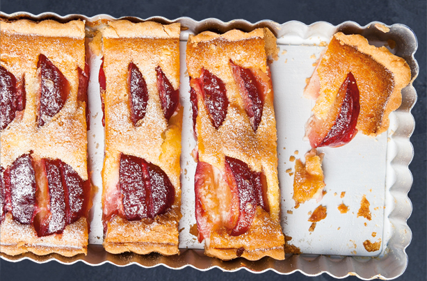

SEPTEMBER

September marks the end of summer berries, but there’s lots of other fruit like apples, plums, grapes, figs and pears. Pumpkin, squash, kale and leeks make their debut, lamb makes a comeback and it’s the start of the mussels season.
Fruit
Apples (Bramley) (coming into season)
Apricots (end of season)
Blackberries
Blueberries (end of season)
Pears (coming into season)
Plums (coming into season)
Vegetables
Beetroot
Broad beans (in season until early Sep)
Carrots
Kale (coming into season)
Leeks (coming into season)
Peppers
Potatoes (maincrop)
Meat
Lamb
Fish and seafood
Crab
Mussels (coming into season)
Salmon